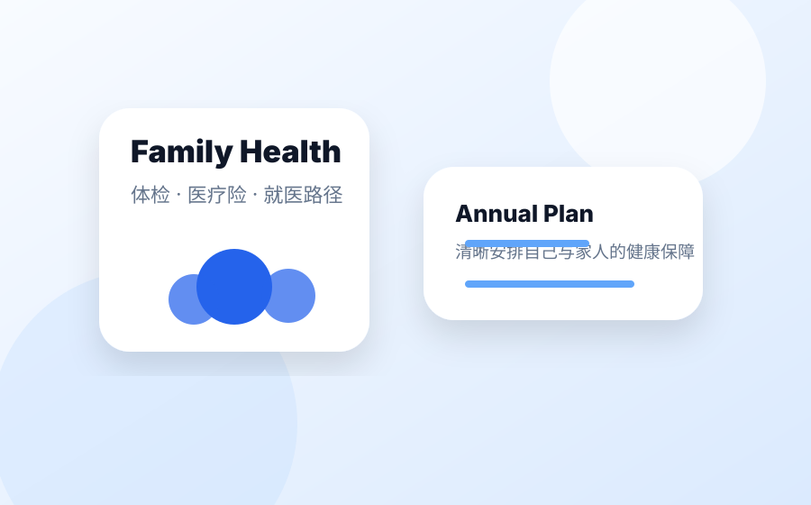
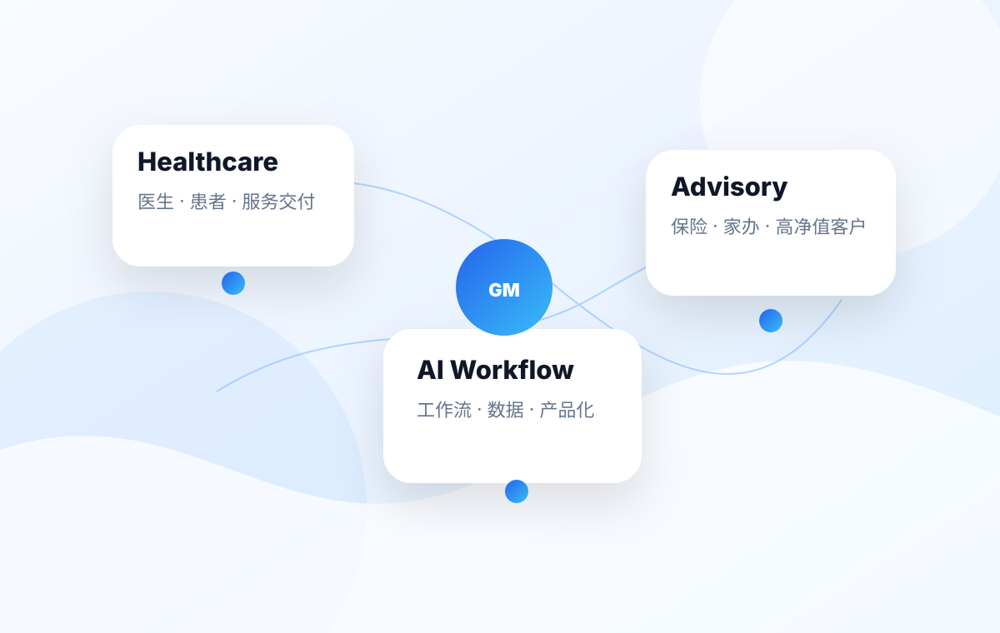
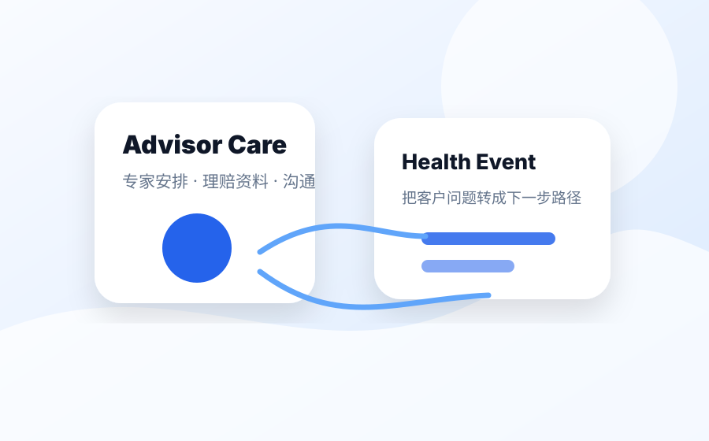
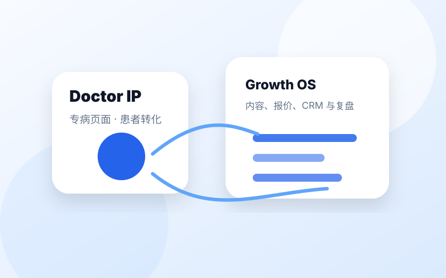
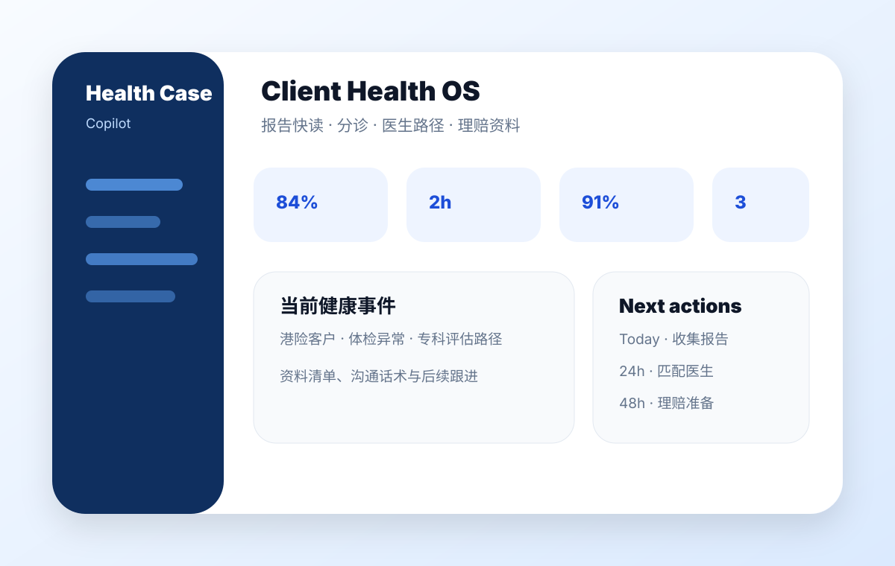
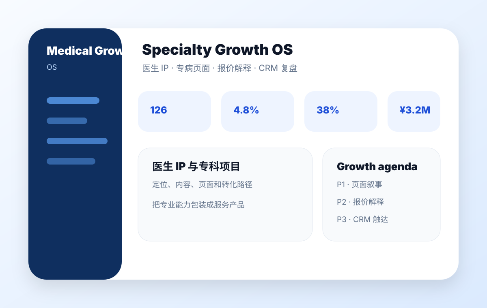

小A｜家庭健康保障
规划体检、医疗险和家庭就医路径
面向开始系统管理个人与家庭健康的人群，将体检、医疗保障与未来就医路径整合为更清晰的决策路线。
典型需求：家庭健康路线图、体检与保险配置、未来就医路径。
可做成：家庭健康保障工作流、体检和保险建议、就医规划入口。
围绕家庭健康保障、客户健康事件服务与医生 IP 增长三大核心场景，将复杂服务流程重构为更清晰、更高效、更可交付的工作方式。

围绕三类核心服务场景展开：家庭健康保障、客户健康事件服务，以及医生 IP 与专科增长。

面向开始系统管理个人与家庭健康的人群，将体检、医疗保障与未来就医路径整合为更清晰的决策路线。

面向保险顾问、财富顾问与健康顾问，在客户出现健康事件后，快速判断下一步、匹配资源，并推进理赔与就医准备。

面向私立医院、诊所与医生团队，将医生表达、专病页面、价格解释、内容与 CRM 触达整合为完整增长链路。
围绕真实服务链路，沉淀一组高频、可复用、可持续迭代的能力模块。
支持体检报告、检查结果、病历信息的抽取、整理与异常项呈现。
结合科室、城市、语言、保险和时效要求，生成下一步路径建议。
按门诊、住院、手术或二诊场景整理所需材料与注意事项。
把医生履历、专长、服务优势与患者语言整合成更高信任的表达。
从专病定位、服务路径到预约转化，快速搭建可上线的医疗落地页。
连接内容、咨询、跟进与转化，把一次服务沉淀成持续优化的闭环。
两个工作台原型分别服务于客户端健康事件处置与机构端专科增长运营。

面向保险顾问、财富顾问和健康管理团队：将客户报告、分诊、医生路径、保险资料和沟通话术整合为一套可执行工作台。

面向医院运营、医生团队与市场增长团队：把医生 IP、专病页面、报价解释、CRM 触达和增长复盘整合为专科增长操作系统。
以下示例展示了从业务需求到数字化原型的落地能力，可进一步延展为持续迭代的产品形态。
来自大湾区头部高端私立医疗一线，长期参与外科与多专科运营、港深医疗服务、医生 IP 与专病增长项目。同时服务并连接 1000+ 绩优保险经纪、代理人与家办相关触点，理解高净值客户在体检、就医、保险权益、理赔和跨境医疗中的真实需求。
高端私立医疗一线运营，多专科增长，医生协作与服务交付。
长期服务和连接保险经纪、代理、家办相关触点，理解真实需求。
HTML Demo、React MVP、GitHub + Codex 工作流与产品化验证。
一份报告、一张价格表、一个医生 IP、一个专病页面，或一个真实客户问题，都可以成为一次高质量共创的起点。
我可以把它变成一个健康事件处置流程：摘要、分诊、路径、资料和话术。
我可以把它整理成更有信任感的医生表达与专病增长页面结构。
我可以把它做成更容易比较、解释和决策的比价工具原型。
我可以和你一起把它拆成 1–2 周可试用、可验证、可继续迭代的 AI 模块。